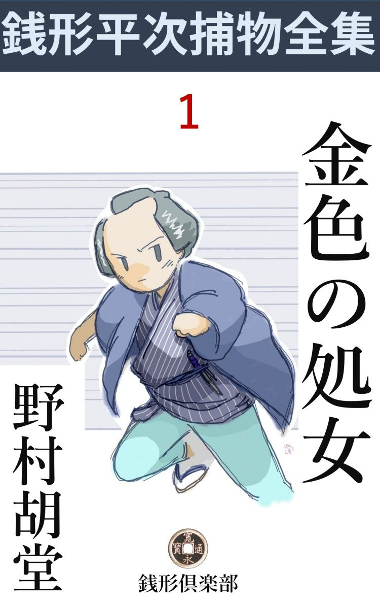
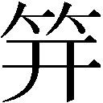
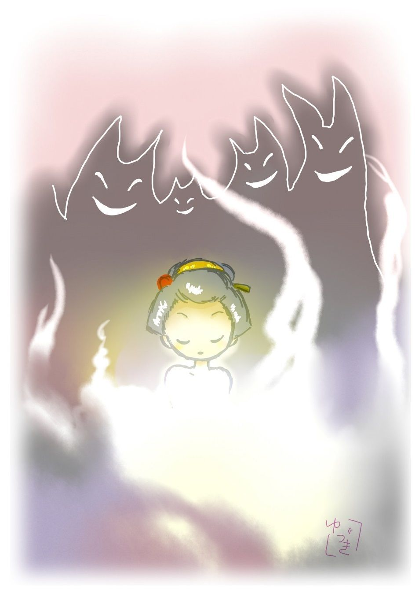

| 金色の処女: 銭形平次捕物全集第１話 (銭形倶楽部) | |
| 野村胡堂 | |
| ZENIGATA CLUB (2018) | |

本篇は銭形平次の最初の手柄話で、この事件で平次は有名になったのです。この頃の平次は独身でしたからお静はまだ女房になっていず、八五郎も現われてはおりません。
一
「平次、折入っての頼みだ。引き受けてくれるか」
「へエ------」
銭形の平次は、相手の真意を測 り兼ねて、そっと顔を上げました。二十四、五の苦み走った好い男、藍 微塵 の狭い袷 に膝小僧を押し隠して、弥造 に馴れた手をソッと前に揃えます。
「一つ間違えば、御奉行朝倉 石見守 様は申すに及ばず、御老中方に取っても腹 切 り道具だ。押し付けがましいが平次、命を投げ出すつもりでやって見てはくれまいか」
と言うのは、南町奉行与力の筆頭笹野 新三郎、奉行朝倉石見守の知 恵 嚢 と言われた程の人物ですが、不思議に高貴な人品骨柄です。
「頼むも頼まないも御座いません。先代から御恩になった旦那様の大事とあれば、平次の命なんざ物の数でも御座いません。どうぞ御遠慮なく仰しゃって下さいまし」
敷居の中へいざり入る平次、それをさし招くように座布団を滑り落ちた新三郎は、
「上様 には、又雑司 ガ谷 の御鷹狩 を仰せ出された」
「エッ」
「先頃、雑司ガ谷御鷹狩の節の騒ぎは、お前も聞いたであろう」
「薄々は存じております」
それは平次も聴き知っておりました。三代将軍家光公が、雑司ガ谷鬼 子 母 神 のあたりで御鷹を放たれた時、何処からともなく飛んで来た一本の征矢 が、危うく家光公の肩先をかすめ、三つ葉葵 の定紋を打った陣笠の裏金に滑って、眼前三歩のところに落ちたという話。
それッ------と立ちどころに手配しましたが、曲者の行方 は更にわかりません。
後で調べて見ると、鷹の羽を矧 いだ箆深 の真矢 で、白磨き二寸あまりの矢尻 には、松前のアイヌが使うと言う『トリカブト』の毒が塗ってあったと言うことです。
「その曲者も召捕らぬうちに、上様には再度雑司ガ谷の御鷹野を仰せ出された。御老中は申すに及ばず、お側の衆からもいろいろ諫言 を申上げたが、上様日頃の御気性で、一旦仰せ出された上は金 輪 際 変替は遊ばされぬ。そこで御老中方から、朝倉石見守様へ直々のお頼みで、是が非でも御鷹野の当日までに、上様を遠矢にかけた曲者を探し出せとのお言葉だ。何とか良い工夫はあるまいか」
一代の才子笹野新三郎も、思案に余って岡っ引風情の平次に縋 り付いたのです。
「よく仰しゃって下さいました。御用聞冥利 、この平次が手一杯にお引き受け申しましょう。ついては旦那、私が聞きたいと思うことを、皆んな隠さずに仰しゃって頂けましょうか」
「それは言う迄もない事だ。何んなりと腑 に落ちない事があったら訊くが宜い」
「ではお尋ねしますが、上様を雑司ガ谷のお鷹野に引き付けるのは、何にか深い仔細 が御座いましょう。小鳥のいるのは雑司ガ谷ばかりじゃ御座いません。目黒にも桐ガ谷にも千住にも、この秋はことの外獲物 が多いという評判で御座います。それがどうしたわけで------」
「これこれ、段々声が高くなるではないか」
「へエ------、でもこれが判らなかった日には手の付けようが御座いません」
「話すよ------、薄々世間でも知っていることだ------、雑司ガ谷の鷹野の帰り、上様 には決って、大塚御薬園へ御立寄りになる。あの中に新築した高田御殿で、一と椀 の御薬湯を召上がるのが、きっとお楽しみだ」
「と申すと」
「世上の噂でも聞いたであろう。御薬園預りの本 草 家 、峠 宗 寿 軒 の娘お小夜は、府内にも並ぶ者なしという美人だ」
「そうで御座いますってね、上様もまったくお安くねえ」
「コレコレ、何を申す」
「へエ------、だが、有難う御座いました。それだけ伺えば大方筋はわかります。仔細あって私もお小夜の顔ぐらいは存じておりますが、あの女はどうしてどうして一筋縄でいける雌 じゃ御座いません------、宜しゅう御座います。乗るか反 るか、平次の出世試し、命にかけてもやって見ましょう」
平次の若々しい顔には感興 にも似たものがサッと匂って、身分柄の隔 りも忘れたように、胸をトンと叩いて見せました。
「お鷹狩の日取りは明後日 だ。ぬかりはあるまいが、そのつもりで------。拙者には拙者の工夫がある。油断をすると、手柄比 べになろうも知れぬぞ」
「へエ------」
二人は顔を見合せて、会心の微笑を交 しました。与力と岡っ引では、身分は霄壤 の違いですが、何にかしらこの二人には一脈相通ずる名人魂があったのです。
二
大塚御薬園、一名高田御薬園というのは、今の音羽の護国寺の境内にあったもので、一万八千坪の中に有名な薬師堂、神 農 堂 をはじめ、将軍臨場 の時の為に、高田御殿という壮麗なる御殿まで出来ていました。
総 檜 の破 風 造り、青 銅 瓦 の錆 も物々しく、数百千種の薬草霊草から発する香気は、馥郁 として音羽十町四方に匂ったと言われるくらい。幕府の御薬園の権威は大したもので、もとより岡っ引や御用聞などの近付ける場所ではありません。
与力笹野新三郎の屋敷を飛び出した銭形平次、いきなり大塚へ飛んで来て、この薬臭い塀にヘバリ付きましたが、場所が場所だけに、どう工面しても入り込む工夫が付かないのです。
丸半日、気のきかない空巣 狙 いのような事をしていた平次も、その日の昼頃には、到頭シビレをきらしてしまいました。
「チェッ」
舌打ちを一つ、袂 から取出したのは、その頃通用した永楽 銭 が一枚です。手の平へ載 せて中指の爪と親指の腹で弾 くと、チン------と鳴って、二三尺空中に飛び上がります。落ちて来るところを掌 で受けると、これがその儘銭 占 。
「帰れって言うのか、よし」
銭を袂に落すと、その儘塀を離れて、音羽の通りへ真っ直ぐに踏出しました。これが銭形平次という綽名 の出たわけの一つ。もう一つ、平次には不思議な手練があって、むずかしい捕物に出会 すと、二三間飛退って、腹巻から鍋銭 を取り出し、それを曲者の面体目がけてパッと抛り付けます。薄くて、小さくて、しかも一寸重い鍋銭ですから、不用意に投げられると、泥棒や乱暴者などは、キット面体をやられます、ひるむ ところを付け入って捕 る、このこつはまことに手に入ったもので、銭形の平次というと、年は若いが悪党仲間から鬼神 の如く恐れられたものです。
その平次が見限ったのですから、御薬園の塀の中の秘密は容易のことではありません。腹立ち紛 れの弥造を拵 えて、長い音羽の通りを、九丁目まで来ると、ハッと平次の足を止めたものがあります。目白坂の降口に、紺 暖簾 を深々と掛け連ねて、近頃出来ながら、当時江戸中に響いた『唐 花屋 』という化粧品屋、何の気もなく表へ出した金看板を読むと、一枚は『------おん薬園へちま の水------』次のは『------南蛮 秘法 、おん白粉------』そして更にもう一枚には、『------峠 流 秘 薬 色々------』とあります。
「これだッ」
平次は思わず顎を引きました。
三
「お静 坊いるか」
「あら親分」
その頃東西の両国に軒を並べた水茶屋の一つを覗 いて、平次はこう声を掛けました。
「よう、相変らず美しいネ。罪だぜ、お静 坊」
「あら親分、そんな事を言うなら、私は嫌」
「どっこい、謝まった。逃げちゃいけねえ、今日は大真面目に頼み事があるんだ。静 ちゃんは、近頃評判の音羽の唐花屋へ買物に行ったことはないか」
「いいえ、朋輩 衆で唐花屋へ行かない人はない程だけれど、私 はまだ行ったことはありません」
「そうだろうねえ、お前ほどの容貌 じゃ、へちま の水にも南蛮渡来の白粉にも及ぶめえ」
「あれ、親分さん」
なるほどこれは美しい容貌 です。精々十七八、血色の鮮 やかな瓜実顔に、愛 嬌 がこぼるるばかり。襟の掛った木綿物に、赤前垂をこそしめておりますが、商売柄に似ず固いが評判で、枝から取り立ての果物 のような清純な感じのする娘でした。
「実は少し無理な頼みだが、半日暇をもらって、唐花屋まで買物に行って貰いたいんだが、どうだろうネ、静い坊」
「え、え、行って上げるワ」
何と言うわだかまり のない返事でしょう。
「そいつは有難てえ、それじゃ御意の変らぬうちに------」
岡っ引と水茶屋の娘ですが、どちらも水際立った美男美女で、二人の胸には、何時の間にやら淡 い恋心が芽ぐんできたのでしょう。兎に角話の運びの早いことは大変です。
両国から小日向 まで駕籠、そこからわざと歩いて、唐花屋の入口に着いたのは彼これ酉刻 近い刻限でした。髪形をすっかり堅気の娘風にしたお静の後姿------黄 八 丈 の袷 と緋 鹿 の子帯 が、唐花屋の暖簾 をくぐって見えなくなった時は、大 日 坂 の下から遠く様子を見ていた銭形の平次も、さすがに眼の前が真っ暗になるような心持がしました。唐花屋がどうという、突き留めた疑いがあるわけではありませんが職業的第六感とでも言いましょうか、------この儘お静を犧牲 にするのではあるまいか------と言った予感が、平次の頭をサッとかすめて去ったのです。
「へちま の水を下さいな」
お静は一向そんな事を構いません。物馴れた調子で日傘を畳みながら、店がまちへもう腰を下ろしております。
「へエ、いらっしゃいまし。丁度今年採 ったばかりの新しいのが御座います。これ徳どん、そこからお入れ物を持って来てお眼にかけな」
美しい客と見ると、馴れている筈の店中も、なんとなくザワついて、二三人の番頭手代が、磁石 に吸付けられる鉄片のように、左右から寄って参ります。
「それからアノ、白粉 も貰って行きましょう」
「へエヘエ」
「それにお紅も」
大束 な事を言って、お静はソッと店中に眼を走らせました。近頃出来の店構えで何となく真新しい普請 ですが、その癖妙に陰気で妙に手丈夫に出来ているのが、娘の繊弱 な神経を圧迫します。
「お茶を召し上がって下さいまし」
若い丁稚 が、店使いにしては贅沢過ぎる赤絵 の茶碗 に、これも店使いらしくない煎茶 をくんで、そっとお静の傍にすすめました。
「有難うよ」
身扮 に相応した堅気の娘なら、この茶は飲まなかったかも知れませんが、お静は水茶屋の女で、お茶を汲 むことも汲ませることも馴れております。桃色珊瑚 を並べたような美しい指でそっと受けて、馴れた様子で一と口、二た口。
「オヤ------？」
お茶にしては妙に甘い、そして香気が可怪 しいと思いましたが、三口目には綺麗に飲んでしまいます。
それから口の小さい素焼 の徳利 へへちま の水を詰めさしたり、白粉と紅とを取揃えたり、お鳥目 を出そうとして帯の間へ手をやった時は、先程から我慢していた恐ろしい眠気 が急に襲 って来て、性も他愛もなく美しい島田髷がガックリ前へ傾 きました。
「徳どんは外を見張れ、お前は手を貸せ」
大番頭が立ち上がって指図をすると、馴れた様子で、バタバタと不思議な作業が始まります。
「へッ、こいつは全く掘 り出し物だ」
「シッ」
二人の若い手代に抱き上げられたお静は、死んだもののようになって、赤い裳 と白い脛 とが、ダラリと下にこぼれます。
音羽の通りは暫く絶えて、大日坂の下には、宵暗に光る眼、銭形の平次は全く気が気じゃありません。
四
この時はじめて平次は、近頃江戸中で評判になった美しい娘が、頻繁 に行方 不明になることに思い当りました------芝伊 皿 子 の荒物屋の娘お夏、下谷竹町の酒屋の妹おえん、麻布  町で御家人の娘お幸 ------、数えて見ると、この秋になってからでも三人ほど姿を隠しております。それも選り抜きの美人ばかり、書置も何んにもないから、まるで神隠しに逢ったようなものですが、それが早くて三日目、遅くとも七日目には、二た目とは見られぬ惨殺 死体となって、川の中、林の奥、どうかすると往来の真ん中に捨ててあるという始末です。
南北町奉行は、配下の与力同心に命じ、江戸中の御用聞を総動員して、この悪鬼のような犯人を探させましたが、何としてもわかりません。犯人がわからないばかりでなく、何の目的で選り抜きの美しい娘ばかり殺すのか、皆暮 れ見当も付かないのです。その上死体は、洗い落してはあるが、歴々 と全身に金箔 を置いた跡 があります。
「これだこれだ」
銭形の平次は一人頷 きながら、宵闇の中をすかして、唐花屋の裏口から出て行く駕籠の後を追いました。その中にお静が入れてあることは最早疑う余地はありません。
駕籠は無提灯 のまま、音羽の裏通りを真っ直ぐに、今の護国寺、その頃の大塚御薬園の裏門へ、呑まれるように入ってしまいました。
「矢張りそうだ」
平次はこの儘引き返して、笹野新三郎に報告した上、御薬園へ手を入れさせようかと思いましたが、御薬園の見識 は大したもので、若年寄直々の指令を受けなければ、町奉行では手の付けようがありません。そんな事で暇取っている内に、お静の命が絶たれては一大事。
「先ずお静を助けよう」
後で考えると、それは多分盲目 的になりかけていた、平次の恋心がさせた思案でしょう。前後の考えもなく木蔭 の土塀に手が掛かると、平次の身体は軽々と塀を越えて、闇の御薬園の中へポンと飛込んでしまいました。
それから何刻経ったか、どこをどう通ったかわかりません。一万八千坪の御薬園の中、茯苓 、肉桂 、枳殼 、山査子 、呉茱萸 、川芎 、知母 、人参 、茴香 、天 門 冬 、芥子 、イモント、フナハラ、ジキタリス------幾百千種とも数知れぬ薬草の繁る中を、八幡知らずにさ迷い歩いた末、僅かの灯を見付けて、真黒な建物の中へスルリと滑り込んでしまいました。
それは多分有名な高田御殿だったでしょう。兎に角、非常に宏壮な建物で、人目を忍ぶにはまことに好都合です。廊下から部屋へ、納戸へ、梯子 段 へと、人と灯 を避けて拾っているうちに、何時の間にやら平次は、天井裏の密閉した一室へ入り込んでおります。
ハッと思って出口を探しましたが、どんな仕掛があったか、四方一様に樫 の厚板で、戸や窓は愚かなこと、蟻の這い出る隙間もあろうと思えません。
「チェッ、勝手にしやあがれ」
度胸を据えてドッカと坐ると、不思議なことに、床板のあっちこっちから、大きく小さく、下の大広間の灯が漏れております。
よく見ると、それは悉 くギヤーマンを張った穴で、この天井裏から、下の様子を覗く為に出来たのでしょう。------これは後で見ると、悉く下の大広間の格 天井 に描かれた、天人の眼や、蝶々の羽の紋や、牡丹 の蕋 などであったと言うことです。
五
最初平次の眼に入った光景は、広間の中央に祀 られた、なんとも形容のしようのない醜悪怪奇を極めた魔像 で、その前と両側には、真っ黒な蠟燭 が十三本、赤い焔をあげてメラメラと燃えております。
魔像の前には蜥蜴 の死骸、猫の脳 味噌 、半殺しの蛇と言った不気味な供物 が、足の高い三方に載せて供えられ、その供物の真ん中に据えた白木の大 俎 板 の上には、ピチピチした裸体が仰向に寝かされて、その側には磨き立てた出刃庖丁が、刃を下にしてズブリと板の上に突っ立っています。
「アッ」
さすがの平次も、思わず唇を噛みました。俎 の上の赤ん坊は、泣きも叫びもせず、好い心持そうにニコニコしているのが、四方 の陰惨な空気の中に、不思議な対照を描 き出して、身の毛のよ立つような気味の悪い情景 です。
突然、今迄聞いた事もないような、陰惨 な合唱 と共に、一隊の男女が、妖魔の行列のように広間へ入って来ました。いずれも真黒な覆面、その間から、眼ばかり光らして、覆面越しの読経 の声も、何んとなく陰に籠ります。
続いて燃え立つような真紅 の布を纏った四人の女が、一人の娘を伴れて現われました。夢見るような足取りで、無抵抗に台の上に押し上げられたのを見ると、こればかりは町娘の服装をしたお静の囚 われの姿だったのです。
「あッ、到頭」
あまりの事に平次は、もう少しで声を立てるところでした。人間の力でこの密室が押し破れるものだったら、どこかの羽目を踏 み砕 いても飛出したであろうが、それとても出来ないことです。
又、一としきり奇怪な読経が湧き起って、魔像とお静の四方 を、黒装束の人間の輪が、クルクルと廻り始めました。
それから暫く続いて、広間は元の静寂に還ると、不意に、人間の輪はサッと散ります。見ると、台の上に立ったお静は何時の間にやら、黒 装束 の人間達の手で、十七乙女の若々しい肌へ、ベタベタと金箔 を置かれているところだったのです。お静は魂の抜けた人形のように、少し仰向き加減に突っ立った儘、なすが儘に任せて身動きもしません。
やがて乙女の上半身に金箔を置き終ると、黒衣長身の長老とも見える男は、黒頭巾の覆面を取ってお静の前に近づきました。
「あッ」
平次はもう一度声を立てるところでした。その男というのは、地獄変相図から抜け出した、悪鬼のように恐ろしく映ったでしょう。
「------」
続いて覆面を除ったのは、この薬園の預主 、峠 宗 寿 軒 です。半白の中老人で、立居振舞になんとなく物々しいところがあります。
二人は前後して進んで、金箔 を置いた乙女 の肩へ唇を触れました。続く黒装束の五、六人も、悉 く覆面を外 して、同じように乙女の身体へ唇の雨を降らせます。
この冒瀆 的 な行法 が、どんなに平次を怒らせた事でしょう。お静の浄 らかさを救う為に、どんな事をしても------とあせりましたが、この密室はどんな設計で出来たものか、二刻 あまり探し抜いても、どうしても入った場所がわかりません。
その内に、下の広間が又賑かになりました。と見ると、焔のような赤い布を纏った、半裸体の四人の美女は、人面 獣身 の魔像と、金箔を置いたお静を中心にして、あらゆる狂態を尽して乱舞を始めたのです。

魔像の前の大 香 炉 には、幾度も幾度も異香が投げ込まれました。天井裏でそれを嗅ぐと、平次の心持も、うつらうつら夢見るようになります。
幾度か醒 めては、広間の様子を覗き、幾度か気を喪 っては何刻となく深い眠りに陥 ちました。------これではならぬと------満身の力を両の拳 にこめ、両眼を見開いて気を励ましましたが、泥酔した人のように崩折 れて、その努力も永くは続きません。
金色の処女 ------お静の上に加えられる、あらゆる辱 かしめと、怪奇至極の大儀式が、断片的に平次の眼と耳に焼き付けられながら、そのまま遠い遠い過去の出来事のように、他愛もなく消えて行きます。
六
明くれば十月九日、三代将軍徳川家光は近臣十二名を従え、微行 の姿で雑司ガ谷へ鷹狩に出かけました。十二人の内四人は将軍と同じ装 いをした近習連、四人は鷹匠 、あとの四人は警衛の士で、微行とは言いながら、この時代にしては恐ろしく手軽です。尤 もこれは家光自身の命令で、目障りになるような士卒は、間近に置かれなかったまでのこと、音羽から小日向、大塚へかけては、何千とも知れぬ警護の士で、蟻の這い出る隙間もなく固めております。
この日はことの外不猟 だったせいか、家光は恐ろしく不機嫌で、近習達とろくろく口も利きません。鷹狩が済むと、待ち構えていたように音羽へ下 って、大塚御薬園の高田御殿へお入りになります。
御薬園の門前に迎えたのは、峠 宗寿軒 、五十がらみの総髪で、元々本草家で武士ではありませんが、役目ですから、麻 裃 を着けて将軍を高田御殿へ案内します。
奥の一間、贅 を尽した調度の中に納まると、近習達も遠慮をして、将軍を存分にくつろがせなければなりません。高麗 縁 の青畳の中、脇息 に凭 れて、眼をやると、鳥の子に百草の譜 を書いた唐紙、唐木に百虫の譜を透 し彫 にした欄間 、玉を刻んだ引手や釘隠 しまで、この部屋には何となく、さり気ないうちに漂う一抹 の怪奇さがあります。
この時、女 の童 に襖 を引かせて、茶碗を目八分に捧げて入って来たのは、峠宗寿軒の娘お小夜です。曙 色 に松竹梅を総縫した小袖、町風に髪を結い上げた風情は、長局 風俗に飽々 した家光の眼には、どんなに美しいものに映 ったでしょう。年の頃は二十二三、少しふけておりますが、その代り町家にも武家にもない、滴 るような美しさがあります。
恐るる色もなく、家光の前に進んで、近々と茶碗を進め、二三歩退って、
「お薬湯を召し上がりませ」
わだかまりもなく言って、俯向 加減に莞爾 します。こんな無礼な仕打は、日頃の家光には見ようったって見られません。大名が廓 通 いに夢中になったように、将軍家光が雑司ガ谷の鷹狩に夢中になったのも無理のないことです。
「------」
家光は黙って茶碗を取り上げました。本草家峠宗寿軒の煎 じた薬湯、別に何の薬と言うでもありませんが、神気を爽 かにして、邪気 を払う程度のもの、唇のところへ持って行くと、高価な薬の匂いがプーンとします。
七
天井裏に閉じ籠められた銭形の平次、幾刻------いや幾日眠らされたかわかりません。フト眼を覚すと、四方 はすっかり明るくなって、天井裏ながら埃 の一つ一つも読めそうです。怪奇な舞踊を思い出して、嘔気 を催 すような不愉快な心持になりましたが、お静の安否 が心もとないので、もう一度ギヤーマンの穴から覗くと、広間は広々と取り片付けられて、白日の光が一杯にさし込み、忌わしい物など影も形もありません。
思い直して出口を探すと、今度はわけもなく見付かりました。壁は同じような樫の厚板で張り詰めてありますから、一箇所だけ手 摺 れがして、出入口ということは直ぐわかります。暫く押したり叩いたりして見ると、どうした弾 みか、いきなりスーッと開きます。多分扉の下の踏み板に仕掛があったのでしょう。
一足漲 るような白日の光りの中へ飛出しましたが、困ったことに、庭にも廊下にも、広間にも玄関にも、夥 しい人間がたかっていて、天井裏から飛び出したままでは、大手を振って出て行くわけに行きません。
「あッ、いけねえ。今日は上様お鷹狩 の日だ」
霞 んだような平次の頭にも、これだけの記憶が蘇 って来ました。今日までに毒矢の曲者を捉 える筈だったのが、天井裏に閉じ籠められてすっかり予定が狂ってしまったのです。
「こいつはしまった」
平次は天井裏で地団駄 を踏むばかりです。
それから又何刻か経ちました。御殿の中の空気は遽 に緊張して、
「上様 のお着き」
という囁きが、隅々までも行 わたります。
上様お着きと言うのは、お鷹野は無事だったという証拠にもなりますから、天井裏の平次もそれを聞いてホッとします。
「間違いがあれば、この御殿内だ。よし、それならば、まだ望みがある」
暫く泥棒猫のように、天井から天井へ、梁 から梁へと渡って歩いた平次、何時の間にやら、羽目からスルリと抜け出して、離れの廂 の下に這い込んでしまいました。首を少し曲げると、一枚開け放った障子の中に、上段の高麗 縁 が見えて、豊かに坐った黒羽二重の膝も見えます。
「上様だッ」
平次はヒョイと首を引きました。と同時に小夜が捧げた薬湯の茶碗が見えます。
やがて家光は薬湯を手に取り上げた様子、それと同時に平次の眼には、もう一つ動くものが映 ります。それは障子の外に、物の隈 のように踞まった総髪の中老人、霰 小紋 の裃 を着て、折目正しく両手をついておりますが、前夜怪奇な行法を修 した、この薬園の預主、峠 宗寿軒 に違いありません。
家光が茶碗を取り上げて、唇まで持って行くと、宗寿軒の唇が歪 んで、障子を射通すような瞳が、キラリと光ります。
「あッ、毒湯 だッ」
捕物の名人、銭形平次には、外の人にない第六感が働きます。前後の事情から考え合せて見ると、家光の手に持っている茶碗の中に、正面 な薬湯が入っているわけはありません。
笹野の旦那がくれぐれも頼んだのは、これだッ。
平次はいきなり廂 から飛び出そうとしましたが、高 が岡っ引、将軍様の前へ飛び出せるわけもなく、大きい声を出そうにも、その辺の物々しいたたずまいを見ると、うっかり騒ぎを大きくして、相手に棄鉢 に出られると、反って恐ろしい事になりそうです。それに毒湯と思うのは、平次の単なる疑いで、実は本当の薬湯を勧 めているのかもわからないのです。
ハッと気が付いて腹巻を探ると、折悪しく鍋 銭 はありませんが、小粒が二つ三つと、それに柄にもなく小判が一枚あります。その頃の小判は大変な値打で、岡っ引などに取っては一と身代ですが、一昨日 笹野新三郎から用意のために手渡された金、将軍様の命に関 ろうと言う場合ですから、物惜 みなどをしている時ではありません。
いきなり小判を右手の拇指 と食指 との間に立てて、小口を唾 で濡 らすと、銭形の平次得意の投げ銭、山吹色の小判は風をきって、五、六間先の家光の手にある茶碗の糸底 に発矢 と当ります。薬湯は飛散って、結構な座布団も畳も滅茶滅茶。
「------」
家光は動ずる風もなく、面 をあげて小判の飛んで来た方を屹 と見やります。
「あッ」
驚いたのはお小夜、起ち上がると、いそいそと近寄って、薬湯に濡れた家光の膝へ、身体と一緒に、総縫い松竹梅の小袖を、サッと掛けました。
八
「これ、何をする------」
あわてて居住いを直す家光の膝を追うように、お小夜は袖の上へ顔を伏せました。
次の瞬間には、
「贋者 ッ」
と弾 き上げられたように起ち上がります。
「漸 く気が付いたか」
「エッ、口惜 しい、お前は誰だえ」
飛び退く女の帯際を猿臂 を延ばしてむんず と摑んだ偽 家光。
「与力笹野新三郎、上様の御座を拝借して、その方親娘 の企 らみを見破りに参ったのだ。神妙にしろ」
と、高い声ではありませんが、ツイ調子に乗って名乗りを上げてしまいました。
これが非常に悪かった------と言うのは、障子の外で、深怨 の眼を光らせていた峠宗寿軒、娘の声にハッと驚いたところへ、続いて笹野新三郎の名乗りです。思わず起ち上がるのへ冠 せて障子の内から、
「父上ッ、露見 ------早く、早く、地雷 火 ッ」
と娘のお小夜が悲痛な声を絞ります。
「おッ、娘、さらばだぞッ」
ヒラリと縁側から飛降りると、廂 の上から銭形平次が、パッと飛付くのと一緒でした。
「野郎ッ、何処へ失せやがる」
素より捕物の名人、寸毫 の隙 もありませんが、困ったことに宗寿は思いの外の剛力で、それに平次は、まる二日物を食わない上、廂から飛降りる機 みに足を挫 いて、進退駈引自由になりません。
「エッ、面倒」
二人はそれでも負けず劣 らず捻 じ合いました。あまりに咄嗟 の出来事で、遠ざけられた近習達が、駆け付ける暇もなかったのです。
そのうちにお小夜の帯がバラリと解けました。錦の厚板 の一と抱 ほどあるのが、笹野新三郎の手に残ると、お小夜は脱兎 の如く身を抜けて、
「父上、地雷火は私がッ」
「おお、娘頼むぞッ、あの犧牲 も逃すなッ」
親娘は最後の言葉を交すと、総縫い松竹梅の小袖は、大鳥のようにサッと奥へ飛込みます。
犧牲と聞いて平次は驚きました。捨鉢になった宗寿軒父子が、地雷火で高田御殿を吹き飛ばすとなると、あの可哀そうなお静の命は一たまりもありません。金箔 を置いて一度は祭壇に載せた処女 の身体は、いずれあの広間の何処かに隠してあるに相違ないでしょう。
「笹野の旦那、此奴 を頼みます」
「お、心得た」
その内に遠慮して遠退いていた近習達も、騒ぎを聞いて駆け付ける様子。平次は猛然として突っかかって来る宗寿軒を、一つかわして芝生の上に叩きのめすと、身を退いてサッとお小夜の後を追いました。挫 いた足首は、焼金を当てるように痛みますが、今はそんな事を言っている場合ではありません。
勝手を知った大広間の中へ入ると、プーンと鼻を衝く煙硝 の匂い、地雷火の口火は早くも点けられたのでしょう。
今更事の危急 な勢いに、平次はゾッと総毛立ちましたが、お静を匿 した場所はまるで見当が付きません。
「お前は銭形平次、もう駄目だよ。一緒に死ぬばかりだ」
呵々 と気違い染みた笑いを突走らせるのは、黒髪も衣紋も滅茶滅茶に乱した妖婦お小夜、金泥 に荒海を描いた大衝立 の前に立ちはだかって、艶やかに邪 しまな眼を輝かせます。
「やい、女、あの娘をどうした」
「知らない」
「いや、知っている筈だ、言えッ」
「言わない、------どうしても言わない。私達をこんな破目に陥し込んだのはお前だろう。------その代りお前の名前を譫言 に言っているあの娘は、この御殿と一緒に木葉 微塵 に砕 け散るよ。好い気味だ、------あれはお前の情人 だろう。知らなくってさ、------おお、もう口火は燃えきった。ホ、ホ、ホ、ホ」
「いや、俺はお静を助けて見せる」
「馬鹿なッ」
荒海の衝立、怒り狂う紺青 の波頭 を背にして、小袖の前を掻き乱したまま、必死の笑いに笑い狂う美女の物凄さ。物慣れた平次も、思わずタジタジと退 りましたが、次第に激しくなる煙硝の匂いに、もう一度気を取り直して、毒蛇の眼の如きお小夜の瞳を、精魂こめて凝 っと見詰めました。
「解るまい、もう最後だ。それッ」
「いや、解った」
何を考えたか平次は、猛然としてお小夜の身体に飛び付きました。細腕を取って引退け、荒海の衝立をサッと前へ引き倒すと、その背後にあるのは『御薬草』と書いた御用の唐櫃 、力任せに蓋 をハネると、中から燦 として金色 無垢 の処女 の姿が現われます。
全身に金箔 を置かれたお静は、半死半生の儘この中に入れられて、捨てるか殺されるかする最後の運命を待っていたのでした。
「あッ、それを助けては」
後ろから縋 り付くお小夜を蹴返 して、金色の処女を小脇に痛む足を引摺って外へ飛出す平次、------それと同時に、
轟然 ------天地も崩るるような物音。
天に冲 する火焔の中に、高田御殿は微塵 に崩 れ落ちてしまいました。
九
これは後でわかった事ですが、峠 宗寿軒 の前身は、駿河 大納言 忠 長 の臣で、本草学の心得があるのを幸い、京都に行ってその道の蘊奥 を窮 め、身分を隠して大塚御薬園を預るまでに出世したのです。
主君忠長自殺の後は、何んとかして、家光に怨 みを報じようと、高田御殿の中に祭壇 を設 けて、中世に流行 った悪魔 を祭神とする呪法 を行ったのでした。その祭に夥 しい犧牲 を要するところから、腹心の者に命じて、音羽九丁目に唐花屋という小間物屋を出させ、江戸中の美女を釣り寄せては、その内でも優れた美人を誘拐 かして犧牲 にし、連夜ひそかに悪魔の呪法 を修 して将軍家光を調伏 する計画だったのです。
それも埒 が明かないと見て、近頃は毒矢 を飛ばしたり、娘お小夜の美色を餌 に、毒湯をすすめて一挙に怨 を報じようとしましたが、奉行の朝倉石見守 が老中に進言して、将軍家光に面差 の似た与力笹野新三郎を替玉に使い、見事にその裏を掻 いて取って押えたのでした。
峠宗寿軒は詮議中に自殺してしまいましたが、娘のお小夜はそれっきり何処へ行ったかわかりません。
大塚御薬園は、その後間もなく取潰 しになり、天和 元年護国寺建立の敷地として召上げられた事は人の知るところです。
銭形の平次はこれだけの仕事をして、将軍の命を狙う怨敵 を平げましたが、笹野新三郎に約束したお鷹野以前に曲者を挙げることが出来なかったのと、事件の性質が性質なので、表向きはその手柄に酬 いられませんでした。併 し、家光の胸に銭形平次の名が印象深く記憶 された事と、金色の処女 ------お静の愛を確 り摑んだことだけで、若い平次は満足しきっておりました。
（編注）
本作品の表題は底本にはルビはありませんが、誤読を避けるため初出時にならってルビをふりました。
作品中には、身体の障害や人権にかかわる、差別的な語句や表現が見られますが、本書が成立した当時の時代背景等が現代とは異なる古典的な文学作品でもあり、著者が故人でもありますので、底本のままとしました。ご理解、ご諒承のほどをお願い申し上げます。
著者---野村胡堂
挿絵---萩 柚月© 2017
初出---「文藝春秋オール讀物號」昭和六年四月号 文藝春秋社
底本---「錢形平次捕物全集」第一巻 河出書房 昭和三十一年五月五日初版
編集・発行 銭形倶楽部